FIP RANKING
Ranking internacional de los 10 mejores jugadores de padel masculino
1-
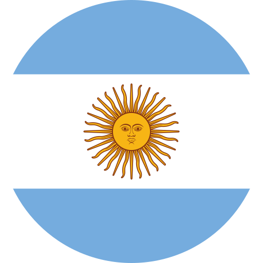
Agustin Tapia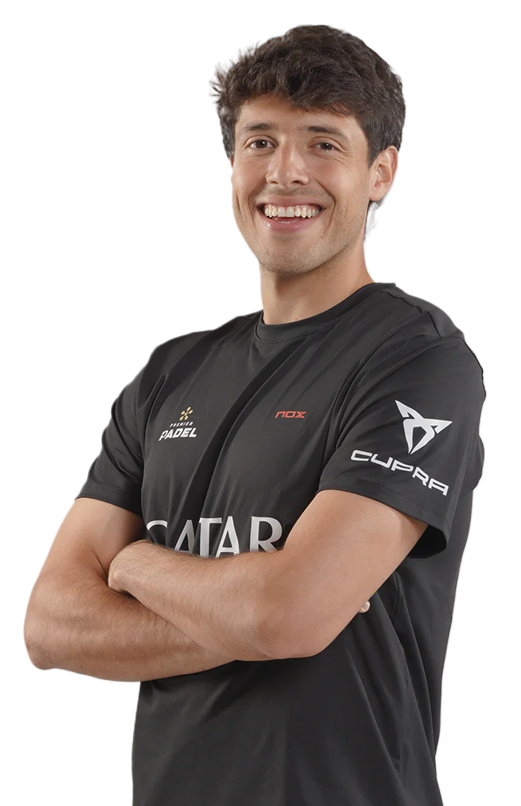
PUNTOS:19800
1-
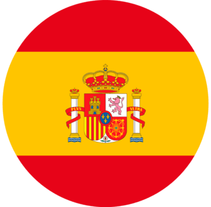
Arturo Coello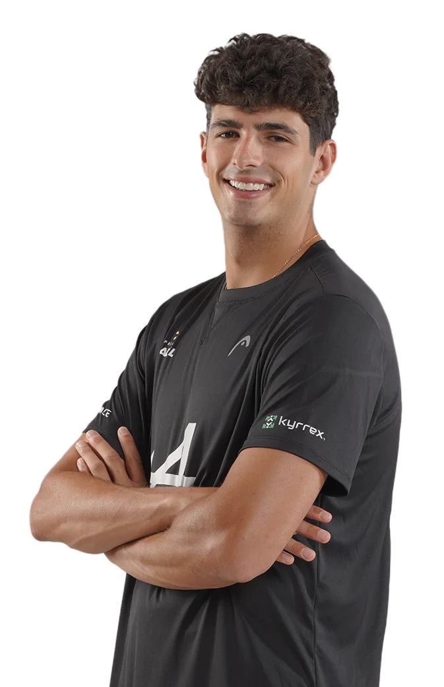
PUNTOS:19800
3- Alejandro Galan
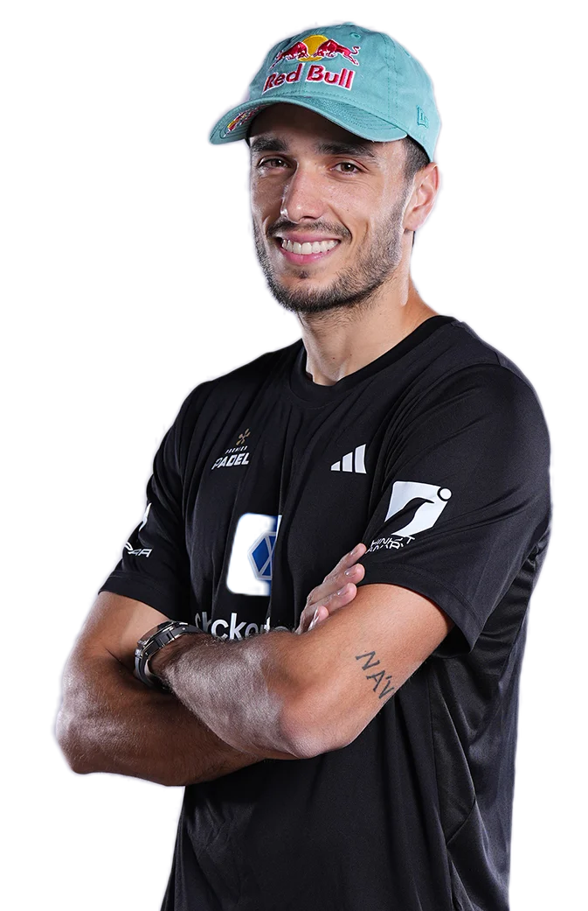
PUNTOS:17320
3- Federico Chingoto
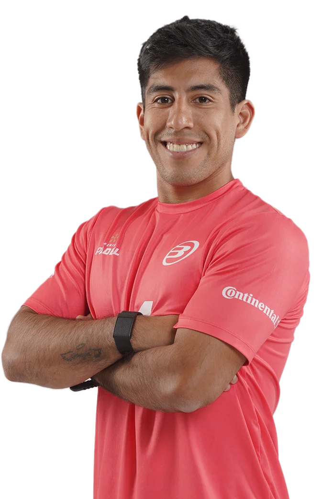
PUNTOS:17320
5- Franco Stupaczuk
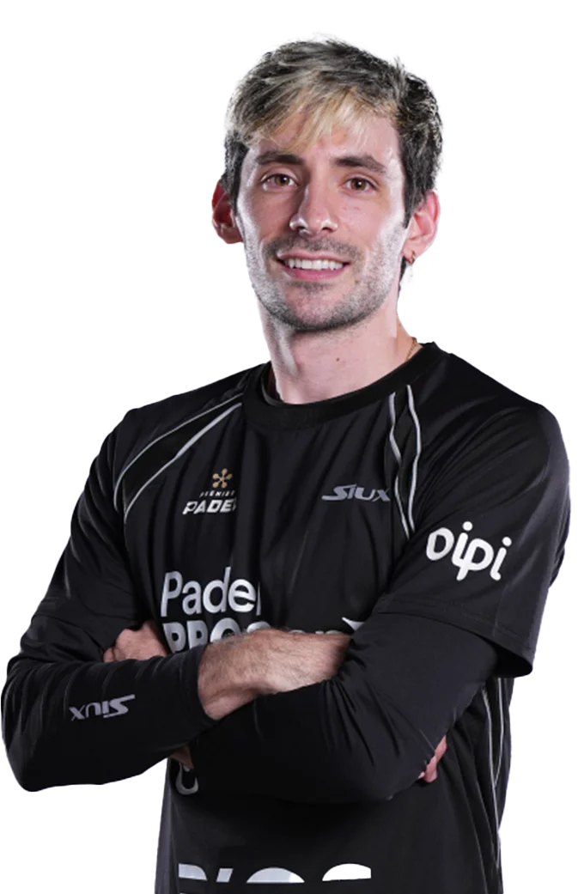
PUNTOS:7905
6- Juan Lebron
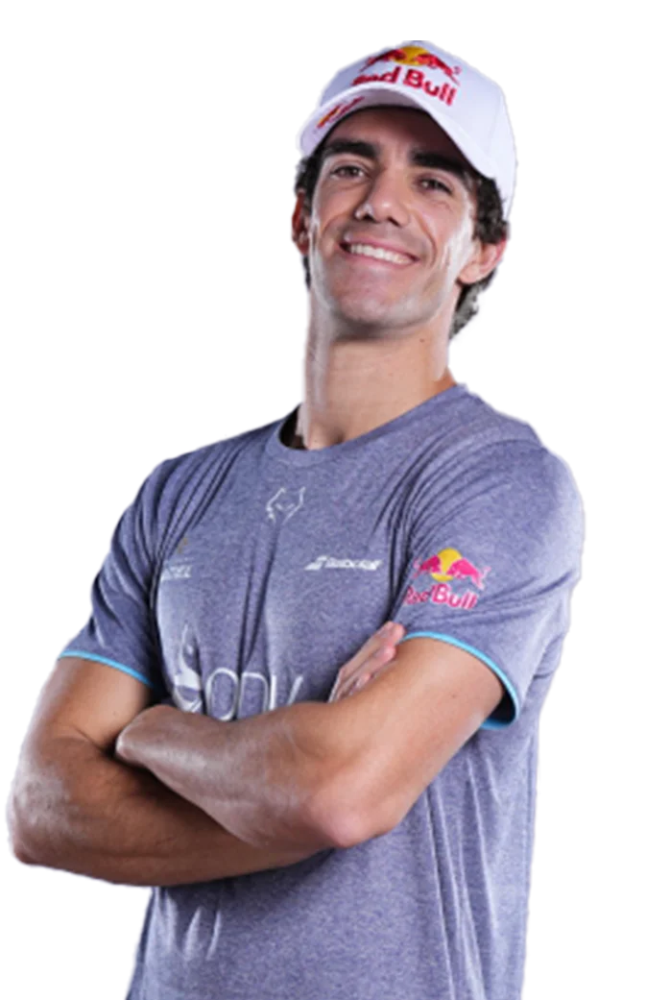
PUNTOS:7845
7- Jorge Nieto
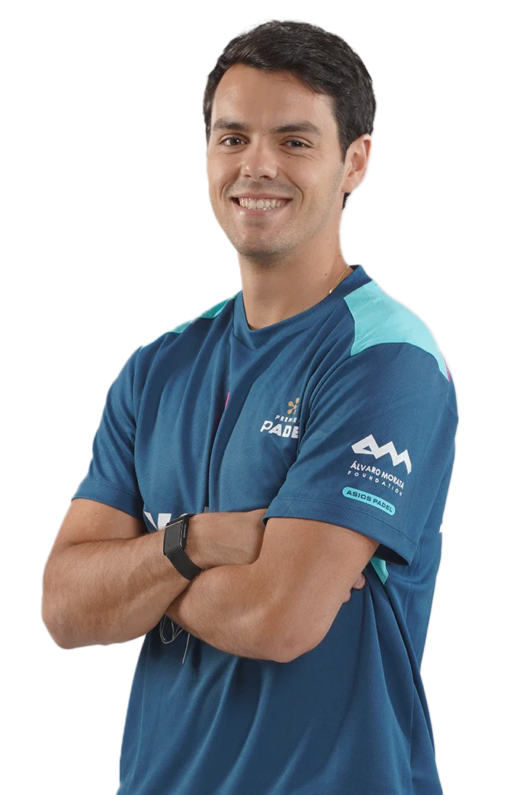
PUNTOS:6322
8- Miguel Yanguas
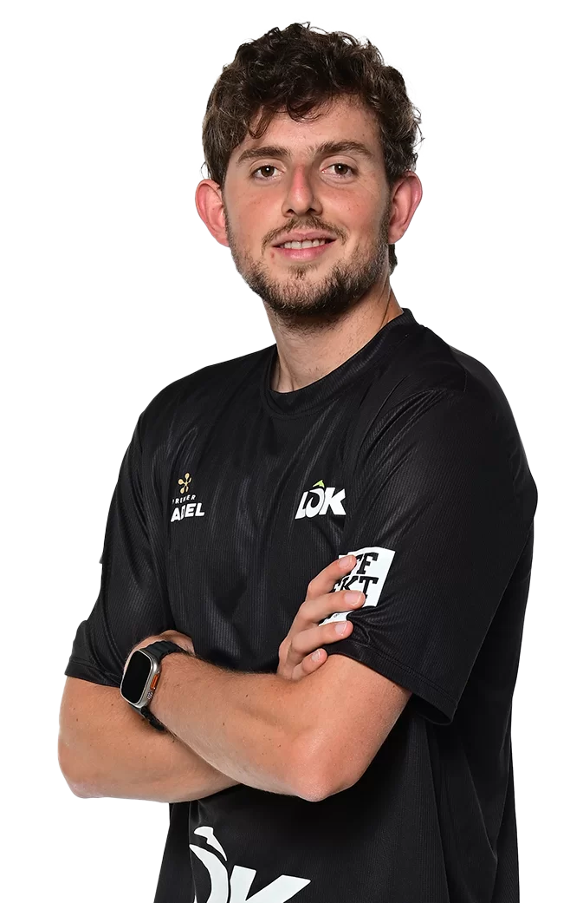
PUNTOS:6322
9- Francisco Navarro
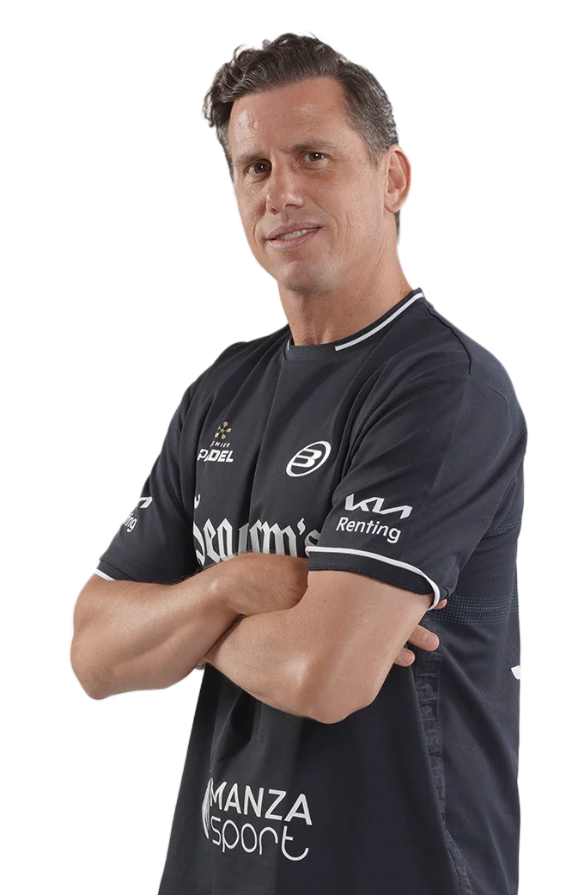
PUNTOS:6115
10- Leandro Augsburger
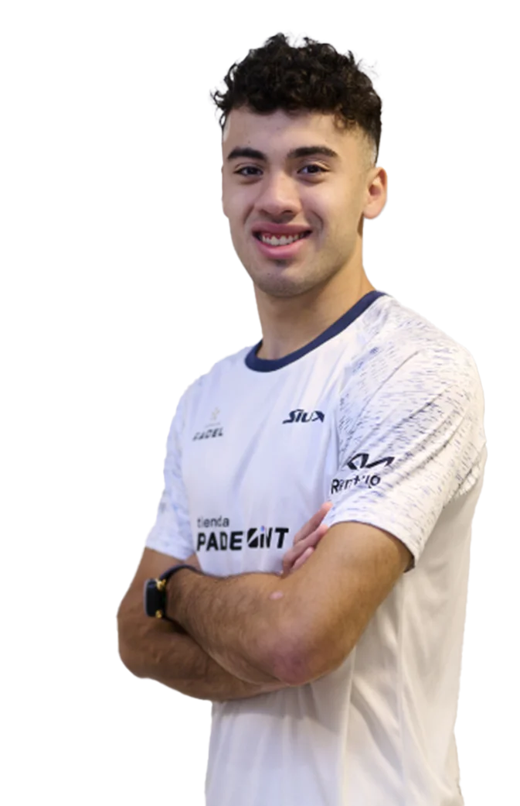
PUNTOS:5155
Los puntos FIP se obtienen participando y ganando partidos en torneos oficiales de la Federación Internacional de Pádel (FIP), como los Premier Padel y el CUPRA FIP Tour, donde mayor es la categoría del torneo y más rondas se avanzan, más puntos se consiguen; por ejemplo, ganar un torneo Platinum da 300 puntos y un torneo Gold da 150 puntos, sumándose a un ranking de 52 semanas donde los puntos se defienden o se pierden anualmente.